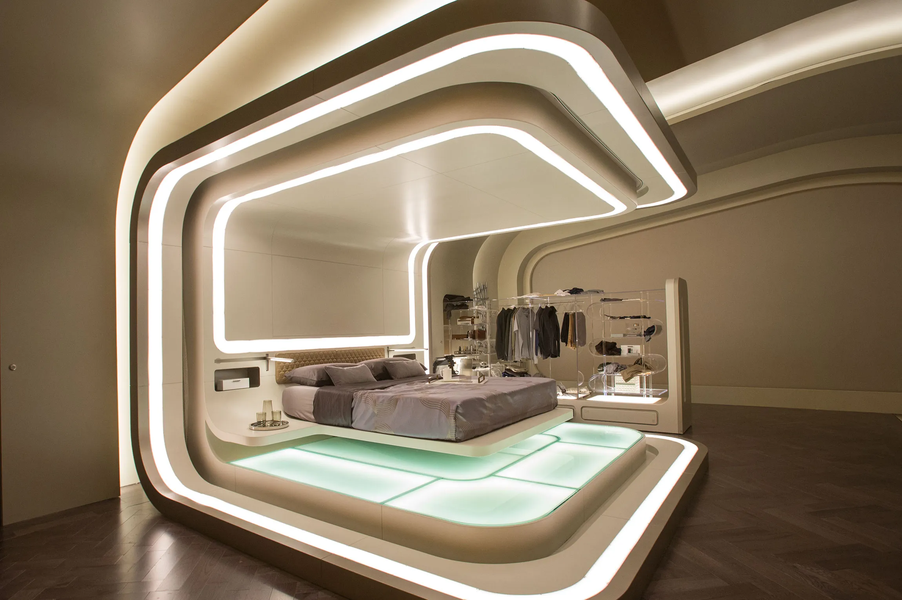
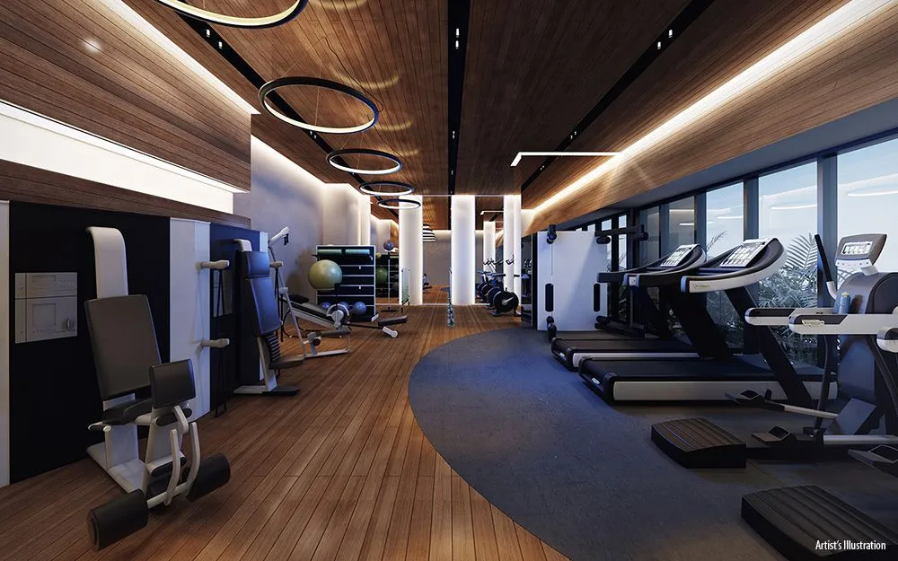
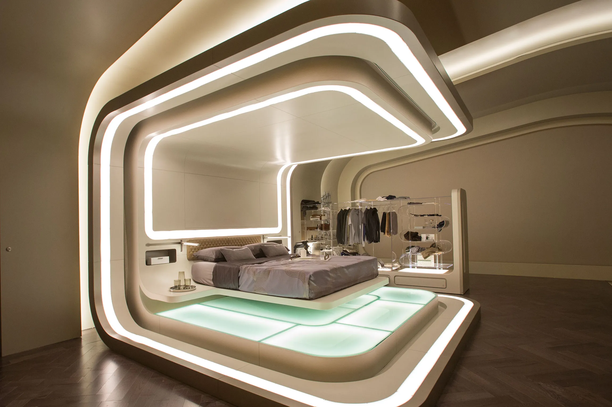
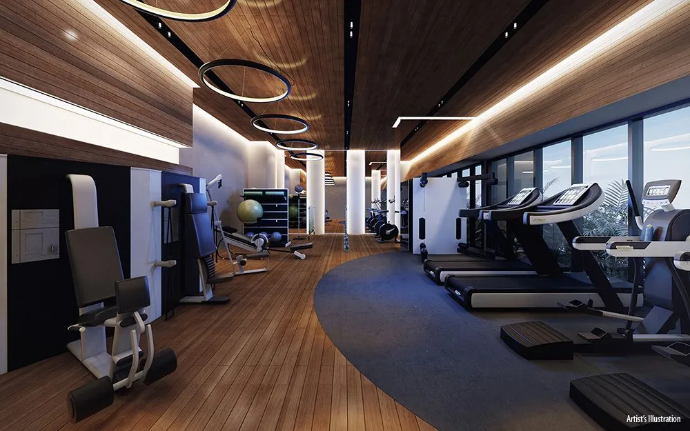

¿Qué es SpaceTrip?
SpaceTrip nace en Murcia en 2041 con el objetivo de proporcionar a los amantes del espacio y las aventuras una forma totalmente nueva de disfrutar sus vacaciones. Contamos con un enorme resort habilitado para 250 visitantes a 500 kilómetros de nuestro planeta, detrás de la Estación Espacial Internacional. En él podrás relajarte viviendo experiencias únicas, y contamos con un personal que se dedicará exclusivamente a ti durante tu estancia.
Nuestros servicios
En nuestras instalaciones contamos con gran cantidad de servicios de calidad para tu comfort, destacando:
- Piscinas: Agua salada y climatizada.
- Spa, baño turco y saunas.
- Jardín natural con gran variedad de especies.
- Gimnasio totalmente equipado.
- Cine y teatro.
- Salón británico con pub y mesas de póker.
- 7 restaurantes con diferentes estilos de gastronomía.
- Mirador infinito al espacio equipado con telescopios de alta calidad.
¿Cuánto cuesta?
El tiempo máximo que puede tener una estancia en SpaceTrip es de 10 días. No existen distintos planes a contratar, el precio funciona por días. Un día en nuestra estación espacial tiene un coste de 300€ por persona, y todos los servicios estarían disponibles. Además, el transporte hacia y desde la estación tiene un coste añadido de 500€.
Nuestras vistas desde SpaceTrip
Fotografías
 


